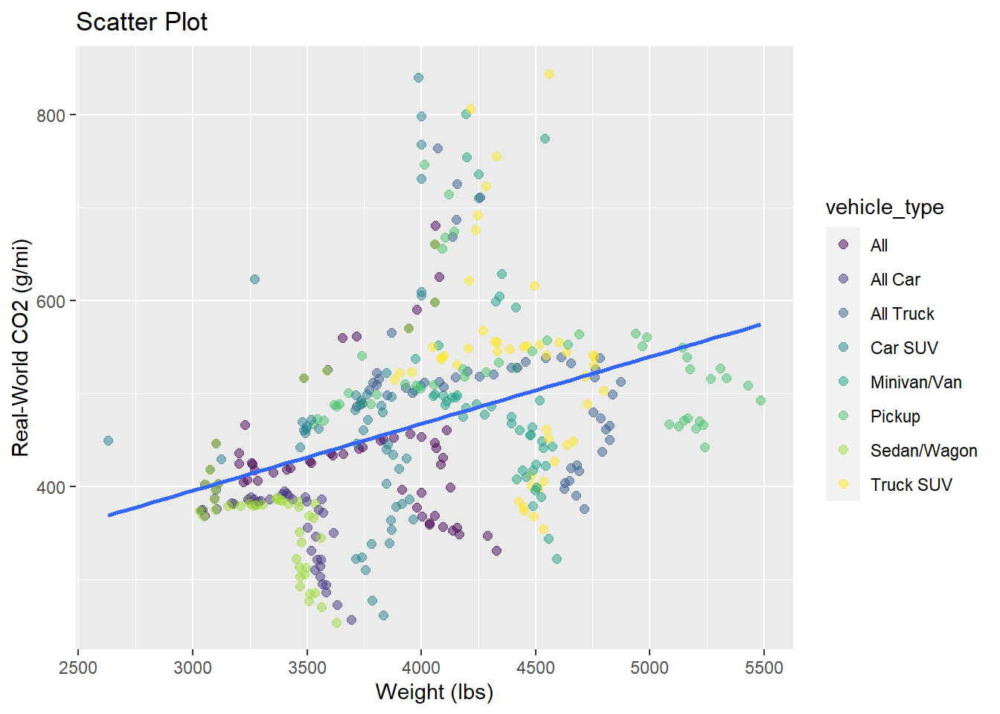
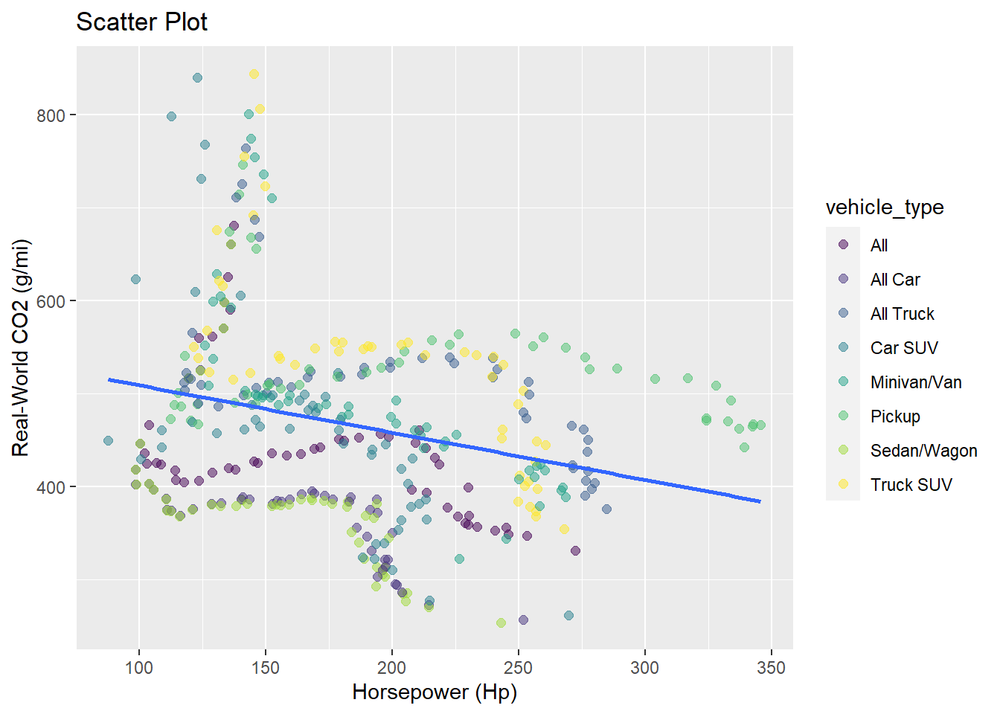
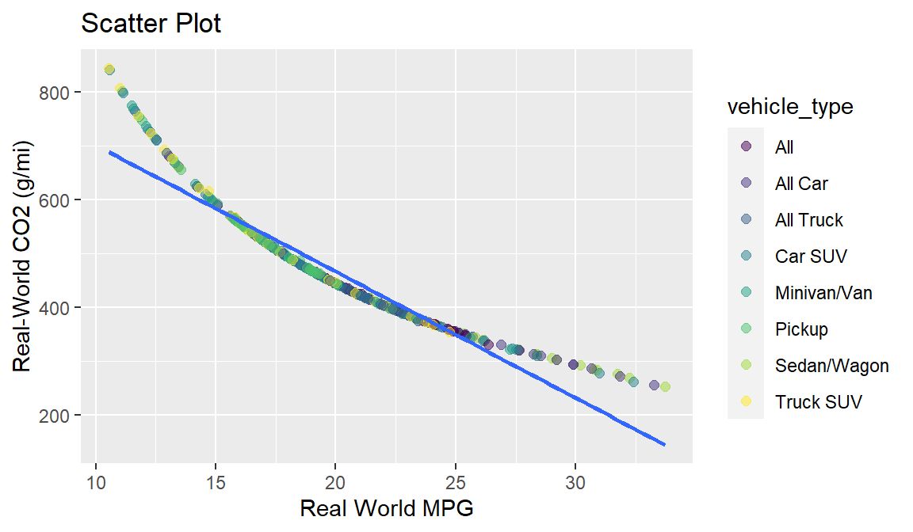

Code
automobile_data <- read.csv("Greenhouse Gas Emissions by Vehicle type.csv")
data("automobile_data")
automobile_data[automobile_data == "-"] <- NA
names(automobile_data) <- tolower(gsub("\\.", "_", names(automobile_data)))Instructor: András Gyimesi, Dr.
This project aims to develop an accurate predictive model for estimating carbon dioxide (CO2) emissions from vehicles based on data obtained from the United States Environmental Protection Agency (EPA). The transportation sector is a major contributor to greenhouse gas emissions, and understanding the factors influencing CO2 emissions from cars is crucial for developing sustainable and environmentally friendly transportation solutions.
Data Collection and Pre-processing
Exploratory Data Analysis (EDA):
Is there any interesting insights on the distribution of CO2 emission? Are there any potential relationships between emissions and car characteristics such as vehicle weight?
Model Selection, Training and Validation:
Can we create a model that predicts CO2 emissions? Can we train and improve the initial model?
Interpretability and Insights:
How best can we interpret our models? Do we have a sufficient goodness of fit? Which car features have significant effect on CO2 emissions?
The dataset used in this project is sourced from the United States Environmental Protection Agency (EPA) and encompasses information on vehicle attributes, fuel efficiency, and CO2 emissions. To learn more about the data, see https://www.epa.gov/automotive-trends/about-automotive-trends-data
The Greenhouse Gas Emissions by Vehicle type data is stored on the project folder as a csv. We read the data and properly clean and format the data to ensure its suitability for modeling.
automobile_data <- read.csv("Greenhouse Gas Emissions by Vehicle type.csv")
data("automobile_data")
automobile_data[automobile_data == "-"] <- NA
names(automobile_data) <- tolower(gsub("\\.", "_", names(automobile_data)))We are going to explore the relationships between the dependent variable (Real-World CO2 (g/mi)) and some potential independent variables for the regression model.
Looking at the coefficient of correlation Real-World CO2 (g/mi) - Car weight (lbs) and Real-World CO2 (g/mi) - Car Horsepower (hp), there is a moderately positive linear relationship (0.3672332) and a weak negative linear relationship between the Real-World CO2 (g/mi), Car weight and Horsepower respectively
cor(automobile_data$weight__lbs_, automobile_data$real_world_co2__g_mi_)
cor(automobile_data$horsepower__hp_, automobile_data$real_world_co2__g_mi_)
ggplot(data = automobile_data, aes(x=weight__lbs_, y=real_world_co2__g_mi_ )) +
geom_point(aes(color = vehicle_type), alpha = 0.5, size = 2) + geom_smooth(method = "lm", se = FALSE) +
labs(title = "Scatter Plot", x = "Weight (lbs)", y = "Real-World CO2 (g/mi)") + scale_color_viridis_d()
ggplot(data = automobile_data, aes(x=horsepower__hp_, y=real_world_co2__g_mi_)) +
geom_point(aes(color = vehicle_type),alpha = 0.5, size = 2) + geom_smooth(method = "lm", se = FALSE)+
labs(title = "Scatter Plot", x = "Horsepower (Hp)", y = "Real-World CO2 (g/mi)") + scale_color_viridis_d() [1] 0.3672332[1] -0.2634112

Looking at the coefficient of correlation Real-World CO2 (g/mi) - Real-world MPG (mile per gallon), there is a strong negative linear relationship (-0.9533945)
cor(automobile_data$real_world_mpg, automobile_data$real_world_co2__g_mi_)[1] -0.9533945ggplot(data = automobile_data, aes(x=real_world_mpg, y=real_world_co2__g_mi_)) +
geom_point(aes(color = vehicle_type),alpha = 0.5, size = 2) + geom_smooth(method="lm", se = FALSE) +
labs(title = "Scatter Plot", x = "Real World MPG", y = "Real-World CO2 (g/mi)") + scale_color_viridis_d()
We will not be considering the Real world MPG in City and in Highway (hwy) for the model, although these lists are provided in the dataset, they are but a derivative of the Real-world MPG list and are extremely correlated to one another. Making use of them will cause a collinearity issue and we do not want that.
c(cor(automobile_data$real_world_mpg, automobile_data$real_world_mpg_city), cor(automobile_data$real_world_mpg, automobile_data$real_world_mpg_hwy))[1] 0.9885022 0.9947138Conclusions: Although the coefficient of correlation tests gives a lot of interesting insights about the strength and direction of the linear relationship between the variables and the real-world CO2 emission, it does not indicate statistical significance. In a regression context, we would want to assess the statistical significance of the coefficient associated with these independent variables.
For this phase, we will progressively build, observe and modify our initial model until we have the model with the best goodness of fit.
modelA <- lm(real_world_co2__g_mi_ ~ real_world_mpg, data = automobile_data)
summary(modelA)
Call:
lm(formula = real_world_co2__g_mi_ ~ real_world_mpg, data = automobile_data)
Residuals:
Min 1Q Median 3Q Max
-22.640 -19.180 -11.923 -1.304 155.687
Coefficients:
Estimate Std. Error t value Pr(>|t|)
(Intercept) 934.9903 7.7630 120.44 <2e-16 ***
real_world_mpg -23.4224 0.3793 -61.76 <2e-16 ***
---
Signif. codes: 0 '***' 0.001 '**' 0.01 '*' 0.05 '.' 0.1 ' ' 1
Residual standard error: 32.47 on 382 degrees of freedom
Multiple R-squared: 0.909, Adjusted R-squared: 0.9087
F-statistic: 3814 on 1 and 382 DF, p-value: < 2.2e-16Comment on Model A: Our coefficient of determination is >90%, this means we can explain 90% of the CO2 emissions with the values of the miles per gallon (MPG). We still have a 32.37% residual error.
modelB <- lm(real_world_co2__g_mi_ ~ real_world_mpg + weight__lbs_ + horsepower__hp_ , data = automobile_data)
summary(modelB)
Call:
lm(formula = real_world_co2__g_mi_ ~ real_world_mpg + weight__lbs_ +
horsepower__hp_, data = automobile_data)
Residuals:
Min 1Q Median 3Q Max
-32.253 -18.151 -8.671 0.432 157.221
Coefficients:
Estimate Std. Error t value Pr(>|t|)
(Intercept) 812.532951 40.146032 20.239 < 2e-16 ***
real_world_mpg -20.611366 0.862766 -23.890 < 2e-16 ***
weight__lbs_ 0.033474 0.009998 3.348 0.000895 ***
horsepower__hp_ -0.367097 0.092791 -3.956 9.09e-05 ***
---
Signif. codes: 0 '***' 0.001 '**' 0.01 '*' 0.05 '.' 0.1 ' ' 1
Residual standard error: 31.85 on 380 degrees of freedom
Multiple R-squared: 0.9129, Adjusted R-squared: 0.9122
F-statistic: 1327 on 3 and 380 DF, p-value: < 2.2e-16Comment on Model B: Our coefficient of determination is better than that of Model A; 0.9122, this means we can explain 91.22 of the CO2 emissions with the values of the miles per gallon (MPG), car weight and horsepower. We also have a lower standard estimation error of 31.85%. It is also important to note that all independent variables have a significant contribution to the model.
In this model, we will be performing a multiplicative transformation mainly for relative percentage interpretation of the slopes of our independent variables.
modelB <- lm(log(real_world_co2__g_mi_) ~ real_world_mpg + weight__lbs_ + horsepower__hp_ , data = automobile_data)
summary(modelB)
Call:
lm(formula = log(real_world_co2__g_mi_) ~ real_world_mpg + weight__lbs_ +
horsepower__hp_, data = automobile_data)
Residuals:
Min 1Q Median 3Q Max
-0.03496 -0.01727 -0.01006 0.00186 0.14300
Coefficients:
Estimate Std. Error t value Pr(>|t|)
(Intercept) 6.986e+00 3.947e-02 176.997 < 2e-16 ***
real_world_mpg -4.722e-02 8.483e-04 -55.669 < 2e-16 ***
weight__lbs_ 3.900e-05 9.830e-06 3.968 8.68e-05 ***
horsepower__hp_ -4.219e-04 9.123e-05 -4.624 5.17e-06 ***
---
Signif. codes: 0 '***' 0.001 '**' 0.01 '*' 0.05 '.' 0.1 ' ' 1
Residual standard error: 0.03131 on 380 degrees of freedom
Multiple R-squared: 0.9805, Adjusted R-squared: 0.9803
F-statistic: 6359 on 3 and 380 DF, p-value: < 2.2e-16Comment on Model C: Our coefficient of determination is better than that of Model A and B; 0.9803, this means we can explain 98% of the natural logarithm of the CO2 emissions with values of the miles per gallon (MPG), car weight and horsepower. Our standard estimation error is 3.13%.
This model interprets the effect of the independent variables as a relative percentage. Therefore, we can say that a coefficient of -0.04722 for “real_world_mpg” suggests a 4.722% decrease in CO2 emissions for a one-unit increase in MPG.
The Regression equation is given as:
\[ \log(\text{Real-World CO2 (g/mi)}) = 6.986 - 0.04722 \times \text{Real-World MPG} + 0.000039 \times \text{Weight (lbs)} - 0.0004219 \times \text{Horsepower (HP)}\ \]